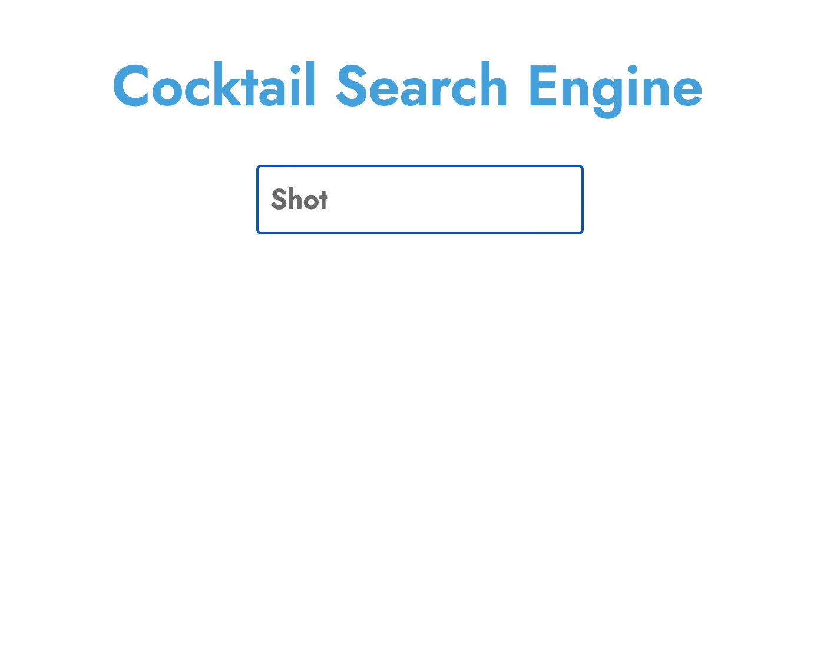
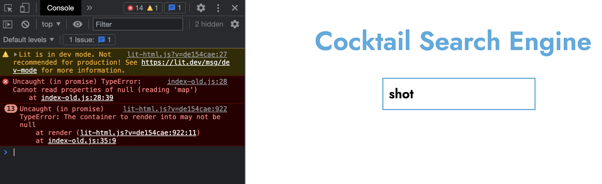

FP2: Final Project
Overview & Usage
The final version of the application is much simpler than what I originally set out to make,
but I am nevertheless proud of the work that went into it and its overall efficiency in finding
drinks that match the search queries that are passed through.
Here is a link to the final version of the app.

Development Proces
The development process was long and arduous. I spend many hours simply
trying to format the JSON into something usable. I also spent a significant
amount of time redesigning the application to better align with the functionality
that I felt would be easier to implement. I was ultimately unable to implement
my new design or any recipe functionality, as I had originally hoped.
The process since the last version was mostly a trial and error approach to
development. I would play with the code, see what changed, and make decisions
based on that. I also used google to search for resources, which varied from very
helpful to completely irrelevant.
In the last phase of the project, I chose to focus on the main functionality (search).
I simplified the code as much as I could and made it easier to search for something
without having to use a “submit” button. The design language that I designed was partly
implemented as well.
Issue Deep-Dive
One issue that I kept having was an “Uncaught (in promise)” error.
I did not know what caused this error. I searched for explanations for
why this error occurred and that lead me to look closer at the lines of
the code that it were causing the issue.

After closer analysis, I realized that there were typos in my code. So that
was rather unfortunate as I wasted quite a long time just trying to understand
the error type.
Ideas and Future Work
The obvious next steps are to actually implement the functionality
that I had planned, like loading the recipes and allowing for
ingredient-based search queries.
These updates would require a significant level of commitment that I am
not ready to make during my last quarter at UW. However, I do think that
this is something that I will consider expanding on at a later time.
Kudos
I would like to give major Kudos to the instruction team for their
support throughout the process. I feel like I made the most progress
during our 1:1 meetings. So thank you so much, Hannah & Raina.
Additionally, I would like to thank the members of my capstone group,
Frannie, Han, and Ryan, for allowing me to share the WIP versions of
my application. They helped me test it, made suggestions for refinement,
and were always supportive of me.
Return to Home Page